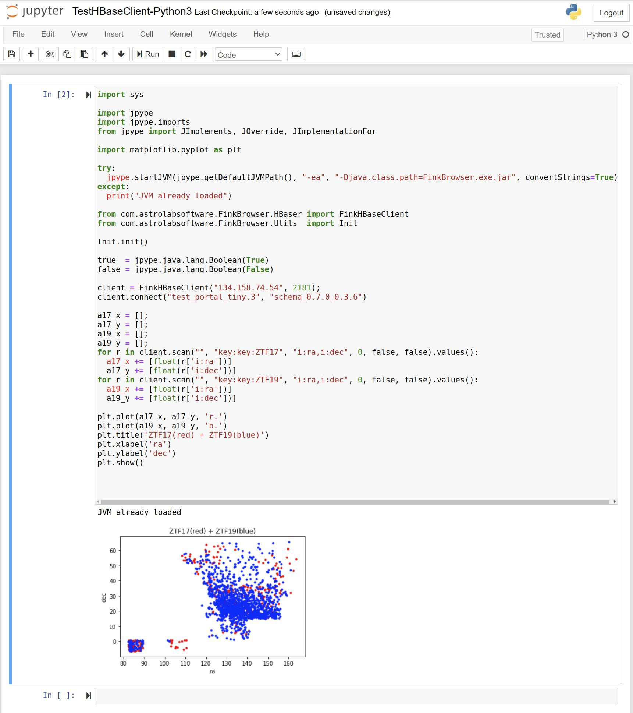

|
Fink Data Explorer
@VERSION@ [@BUILD@]
|
Documentation
- JavaDoc
- Source
- Ant build dependencies
- Class diagram
- https://github.com/hrivnac/FinkBrowser.git
- Externals:
Java,
Lomikel (and others used by it),
HealPix,
Jython (for Jython client, optional),
JPype (for CPython client, optional),
Sage (to perform math analyses, optional),
MatPlotLib (to perform math analyses, optional),
Jupyter (to run in a Notebook),
SciJava Jupyter kernel (for Java Notebook)
- Tools:
Ant,
J2H,
Vizant,
UmlGraph,
FindBugs,
CleanImports,
ApiViz,
JDepend
schema:
index:
top-level structure:
Customisation
- Servers-<target>.jsp contains the list of Gremlin servets
- Graphs-<target>.jsp contains the list of initial graphs, formed as Gremlin queries
- bootgreamlin property contains the specific Gremlin query
Options
- profile for initial calls (null, test, local, ijclab)
- style for pane setup (null, test, simple)
Command line (executable Java) can be downloaded from the repository:
FinkBrowser.exe.jar.
It serves as a foundation for all clients.
$ java -jar FinkBrowser.exe.jar -h
usage: java -jar Lomikel.exe.jar
-b,--batch run in a batch
-g,--gui run in a graphical window
-h,--help show help
-q,--quiet minimal direct feedback
-s,--source <file> source bsh file (init.bsh is also read)
It allows BeanShell/Java scripting, with Python and SageMath interface.
Access to HBase
BeanShell/Java example:
Jython example (needs Jython):
CPython example (needs JPype):
Sage example (needs also SageMath):
CPython example with graphics (needs also MatPlotLib):

Access to JanusGraph
BeanShell/Java example:
Jython example (needs Jython):
Full example, connecting to both databases (Java version):
Another usefull methods:
// Return not only exact results, but all rows in between
client.setRangeScan(true);
// Get time dependence of column value
// (using HBase timestamp for HBaseClient, i:jd for FinkHBaseClient)
results = client.timeline("i:dec", null);
// Get latest values for a column
// (using HBase timestamp for HBaseClient, i:jd for FinkHBaseClient)
results = client.latests("i:dec", null, 5000, false);
// Get the alerts from time interval
// (using Julian Date, for FinkHBaseClient)
results = client.search("2458860", "2458861", true, "i:ra,i:dec", true, true);
// Get alerts in a cone around ra*dec direction
// (using degrees, for FinkHBaseClient)
results = client.search(59.8990234, 50.2781216, 5.0/3600.0, "i:ra,i:dec", false, false);
// Convert results (as a Map) into readable String
client.results2String(results)
// Convert results (as a Map) into a List
client.results2List(results)
// Set columns, which should be always received
// (* gives all)
client.setAlwaysColumns("i:ra,i:dec")
// Add columns, which should be always received
// (* gives all)
client.addAlwaysColumns("i:ra,i:dec")
// Request all results in between searched results
client.setRangeScan(true)
Running in Jupyter/SciJava:
Running in Jupyter/Python3:

Running in Jupyter/SageMath:
Running in Gremlin console:
Bugs
Inconsistencies
ToDos
- 00.01.00:
- 00.01.00:
- Usable, based on JHtools 00.04.00.
- 00.02.00:
- 00.03.00:
- Direct HBase connection.
- Latest alerts with expansion.
- CLI.
- 00.04.00:
- Better CLI,GUI.
- Faster HBase.
- 00.05.00:
- Callable from Python.
- Callable from Sage Math.
- 00.05.02:
- Better WS.
- Link from HBase table to Graph.
- 00.06.00:
- Included Gremlin client.
- Specific FinkHBaseClient.
- FinkHBaseClient.timeline and latests implemented.
- 00.07.00:
- Adding cone search with Healpix.
- Creating aux healpix table.
- FinkHBaseClient.latests(...) gives results in reverse order.
- Scatterplot and Evoltionplot.
- 00.08.00:
- Scatterplot and Evolutionplot consolidated and improved.
- 00.09.00:
- Custom and Range selectors moved to Lomikel.
- Sky View.
- Links from plots to hbase table.
- 00.10.00:
- Populating graph from HBase.
- Working in IJCLab.
- *.*.*:
- Adding Gremlin schema and index.
Related Documentation
 J.Hrivnac @BUILD@
J.Hrivnac @BUILD@
{kind=link}
{kind=link}
{kind=link}


{kind=link}
{kind=link}